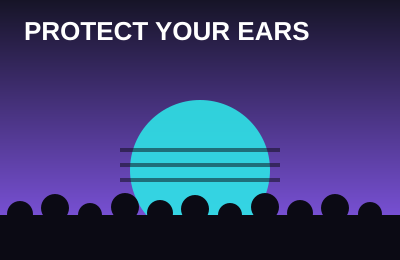

Festival Survival Guide
Everything I wish someone told me before my first festival.
What to pack
Must haves
- Ticket / wristband (registered!)
- ID and a card
- Phone + portable charger
- Earplugs
- Empty hydration pack
Comfort
- Broken-in shoes
- Sunscreen
- Light jacket or pashmina
- Hand fan
- Baby wipes
Leave at home
- Brand new shoes
- Expensive jewelry
- Anything you can't lose
- A full backpack
- Bad vibes
Protect your ears

Main stage speakers can hit over 100 decibels, which is loud enough to cause hearing damage in a short amount of time. Ringing ears after a show is a warning sign, not a badge of honor.
High-fidelity earplugs lower the volume evenly, so the music still sounds clear, just quieter. As a DJ, my ears are my most important piece of gear, so I never go to a show without a pair.
Rule of thumb: if you have to shout to someone right next to you, put your earplugs in.
First-timer FAQ
How long should I plan to stay each day?
Most people show up a few hours after gates open and stay until the end. Pace yourself. Take breaks in the shade or at a chill-out area, especially if it's a multi-day festival.
How much water should I drink?
Drink water steadily throughout the day instead of chugging a lot at once. Most festivals have free refill stations. Also grab an electrolyte drink every now and then, since you're sweating out more than water.
What if I lose my friends?
Cell service is usually terrible at festivals, so pick a meetup spot (a landmark, not "by the main stage") and a time to check in before you split up.
What shoes should I wear?
Comfortable shoes you've already broken in. You can easily walk 10+ miles in a day. Closed-toe is better since the ground gets dusty and crowded.
Where can I get help if something goes wrong?
Every major festival has medical tents and staff. Find them on the map when you arrive. Don't be afraid to go if you or a friend feels off. They are there to help, not to get anyone in trouble.